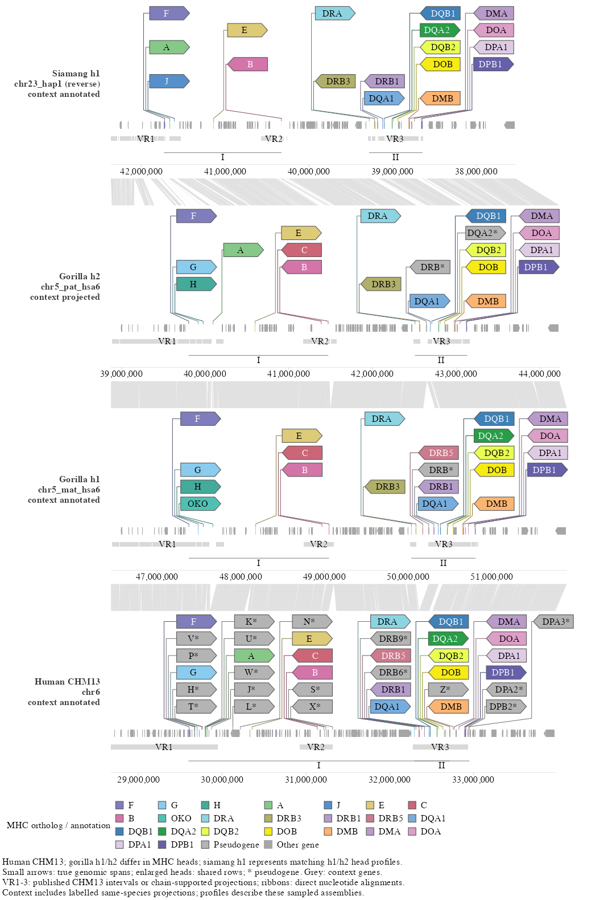

Haplotype representation of the MHC region across apes
Source:vignettes/mhc-continuous-demo.Rmd
mhc-continuous-demo.RmdThis article builds the MHC haplotype figure step by step: inspect the data, put every haplotype on one scale, add genes, then the enlarged MHC heads, then the nucleotide links, and finally the facet layout that sets the link-panel height. The view recombines the gene identity and status information of Extended Data Fig. 3a/b with the continuous region and alignment design of Fig. 3c in Yoo et al. (2025). It is a source-backed reconstruction, not a pixel reproduction of the published figure.
The complete source dataset contains 13 haplotype tracks and 285 curated MHC genes. The worked example below first loads that whole data object, then subsets it to human CHM13, gorilla h1/h2 and siamang h1 before plotting. The compact figure has four annotation tracks, 97 curated MHC heads and three nucleotide-link panels, while preserving the full native windows, common bp scale and shared head rows. Human has only the CHM13 reference in these inputs. Gorilla’s two curated head profiles differ; siamang’s two profiles match in gene identity, copy count, order, strand and status, so only h1 is shown.

Compact example: subset the full object first
Run these blocks from a repository checkout root after installing the
package and its dependencies. The helpers are repository example
functions, loaded with source(); they are not exported
package APIs. The source tables are not installed with the package, so
the website embeds the verified render above.
Load all haplotypes and annotations together
read_mhc_data() returns a list containing the complete
SynSpecies object (species) plus its native
windows, MHC genes, context models, exons, variable regions and
alignment tables. It also records max_bp from all
13 windows. No species selection happens while reading:
library(ggexon)
source("data-raw/ape_paper/mhc_tutorial_data.R")
mhc_all <- read_mhc_data()
stopifnot(length(individual_names(mhc_all$species)) == 13L,
nrow(mhc_all$mhc) == 285L)The full alignment collection includes the original 12 adjacent comparisons plus two direct bridges needed for the compact order: siamang h1 → gorilla h2 and gorilla h1 → human CHM13. These were computed directly from the cached DNA with the same minimap2 and block-filter settings. Subsetting does not invent alignments across removed tracks.
Select a reusable smaller data object
keep <- c("SSYh1", "GGOh2", "GGOh1", "HSAh1") # top to bottom
mhc_small <- subset_mhc_data(mhc_all, tracks = keep)
stopifnot(
identical(individual_names(mhc_small$species), keep),
length(pairwise_alignments(mhc_small$species)) == 3L,
nrow(mhc_small$mhc) == 97L,
identical(mhc_small$max_bp, mhc_all$max_bp),
length(individual_names(mhc_all$species)) == 13L # original unchanged
)The subset copies the selected individuals with their attached
annotations, filters every annotation table consistently, retains only
the direct alignments for adjacent selected tracks and rebuilds the
chain layout. A requested pair without a stored direct alignment raises
an error rather than drawing a false bridge. The original
mhc_all remains available for another selection. The full
object’s max_bp is retained, so selecting fewer tracks does
not rescale each haplotype or move any genomic anchor.
Render the selected object
compact_plot <- render_mhc_data(
mhc_small,
output_dir = "data-raw/ape_paper/results/mhc_compact/figures"
)
grid::grid.newpage()
grid::grid.draw(compact_plot$gtable)render_mhc_data() passes the subsetted
SynSpecies and its associated tables to the shared
renderer. It returns the plot, measured gtable and PDF/PNG paths. It
keeps the exact small MHC arrows, grey context, ortholog colors,
pseudogene markings, six shared head rows and lower annotation lanes.
The export is 180 × 267.5 mm, about 67% shorter than the full
comparison, with 252 ribbons and 860 grey context arrows. The helper
definitions are in data-raw/ape_paper/mhc_tutorial_data.R;
the short runnable entry point is
data-raw/ape_paper/render_mhc_compact.R.
The remaining steps explain the shared rendering pipeline and the complete source data. Their full-dataset counts (13 tracks, 285 heads, 624 original ribbons) describe the original seven-species view, not the compact subset.

The class II detail isolates the two gorilla haplotypes. It shows the small native arrows and enlarged heads from Steps 3-4 and the ribbons from Step 5. The exact code below also adds the VR lane and the class I/II spans before the facet call.
Step 1. What is in the MHC data?
All inputs are tab-separated tables under
data-raw/ape_paper/results/mhc_continuous/. The main files
are:
| File | One row per | Key columns |
|---|---|---|
windows.tsv |
haplotype window |
track, label, chr,
start0, end0, length,
orientation
|
gene_models_with_recovered_context/models.tsv |
representative transcript |
track, model_id, gene_symbol,
chromStart, chromEnd, strand,
annotation_evidence, projection_coverage,
projection_identity
|
gene_models_with_recovered_context/exons.tsv |
supporting exon |
model_id, start0, end0
|
mhc_full/genes.tsv |
curated MHC gene |
track, locus, start,
end, strand, gene_name,
functionality
|
links.tsv |
alignment block |
tspecies, qspecies, tstart,
tend, qstart, qend,
strand, identity
|
discordant_regions.tsv |
variable-region piece |
track, region, start0,
end0, display_start0,
display_end0
|
source_metadata/mhc_continuous/colors.txt |
ortholog key | gene key, RGB |
Coordinate conventions matter here: windows.tsv and the
derived tables use BED0, half-open coordinates (start0,
end0). The curated genes.tsv table stores
one-based closed coordinates (start, end), so
the renderer converts start to
start0 = start - 1 before plotting.
Representative rows look like this:
windows.tsv
track label chr start0 end0 length orientation
SSYh1 Siamang h1 chr23_hap1 37530567 42365376 4834809 -
PTRh1 Chimpanzee h1 chr5_hap1_hsa6 34745920 40035224 5289304 +
HSAh1 Human CHM13 chr6 28669878 33979214 5309336 +
genes.tsv
track locus start end strand gene_name functionality
HSAh1 MHC_I 29595529 29610626 + HLA-F functional
links.tsv
tspecies qspecies tstart tend qstart qend identity
SSYh2 SSYh1 1 113549 1 113407 97.9The curated table has 285 records.
functionality is the source call (functional
or pseudogene); locus separates class I from
class II; and gene_name supplies the identity key used for
colors and for the shared head rows. The context tables contain released
models and explicitly labelled same-species Liftoff projections, with
annotation_evidence distinguishing the two.
B <- "data-raw/ape_paper/results/mhc_continuous"
windows <- read.delim(file.path(B, "windows.tsv"))
links <- read.delim(file.path(B, "links.tsv"))
regions <- read.delim(file.path(B, "discordant_regions.tsv"))
models <- read.delim(file.path(B, "gene_models_with_recovered_context/models.tsv"))
exons <- read.delim(file.path(B, "gene_models_with_recovered_context/exons.tsv"))
mhc <- read.delim("data-raw/ape_paper/results/mhc_full/genes.tsv")Step 2. Put every haplotype on one scale
This is the part that is easy to misread. Each track comes from a different assembly window. Human starts at 28.7 Mb, chimpanzee at 34.7 Mb, and siamang at 37.5 Mb; the windows also differ in length (4.79-5.80 Mb) and siamang is stored in the reverse orientation. If you plotted the raw coordinates on one x-axis, the rows would not line up and one base pair would have a different width in each row.
The figure therefore converts every native coordinate to a display coordinate that starts at 0 for every track:
- plus orientation:
display = native - window_start - minus orientation:
display = window_end - native
For example:
| track | native window (start0-end0) |
orientation | feature start | display |
|---|---|---|---|---|
| HSAh1 | 28,669,878-33,979,214 | + | 28,670,000 | 122 |
| PTRh1 | 34,745,920-40,035,224 | + | 34,746,500 | 580 |
| SSYh1 | 37,530,567-42,365,376 | - | 42,364,000 | 1,376 |
The display coordinate is a drawing coordinate, not a biological one. It makes every track start at the left edge of the page. A reverse-oriented track is reflected, so its genes run in the comparable left-to-right order. Because the longest window defines the display range, one base pair occupies the same horizontal distance in all 13 rows. That is what allows the gene positions and the ribbons to line up.
transform_native <- function(d, a, b, trackcol = "track") {
z <- windows[match(d[[trackcol]], windows$track), ]
lo <- pmax(d[[a]], z$start0) # clip features that cross the window edge
hi <- pmin(d[[b]], z$end0)
d$xmin <- ifelse(z$orientation == "+", lo - z$start0, z$end0 - hi)
d$xmax <- ifelse(z$orientation == "+", hi - z$start0, z$end0 - lo)
d
}
max_bp <- max(windows$length) # shared bp-to-display scale for every trackNative coordinates are not discarded. The tick labels are rebuilt
from windows.tsv at the end, so each row still shows its
own assembly coordinates even though all rows share the display
geometry.
Next, the per-track annotation and the adjacent pairwise alignments
are stored in one SynSpecies object. The 12 alignments are
what the link panels will use.
sp <- SynSpecies(name = "continuous_MHC")
for (id in windows$track) {
# the renderer writes a tiny curated GFF from the MHC spans for this track
sp <- add_individual(
sp,
load_annotation(SynIndividual(id = id, annotation_file = gff_for(id),
annotation_format = "gff"))
)
}
pair_names <- character()
for (i in seq_len(nrow(windows) - 1L)) {
nm <- paste(windows$track[i], windows$track[i + 1L], sep = "__")
pair_names <- c(pair_names, nm)
sp <- add_pairwise_alignment(sp, SynPairAlignment(
nm,
target_individual = windows$track[i],
query_individual = windows$track[i + 1L],
data = links_for_pair(i)
))
}
sp <- store_chain_layout(sp, free = list(x = TRUE, y = TRUE))Step 3. Genes first with geom_gene()
The first layer is the gene annotation. There are two kinds of arrows:
-
Context genes are representative source transcripts
outside the curated MHC set. They are drawn in neutral grey with
geom_gene(). - Native MHC arrows are one small arrow per curated MHC gene, using the exact curated native span and the source ortholog color. They sit in the same lane as the context genes.
Neither layer draws exon glyphs: the transcript structure is used for
model selection, but the figure shows one span per representative gene.
Helper objects such as gff_for(),
links_for_pair(), strip_labels,
panel_limits and class_spans are built a few
lines earlier in the renderer and omitted here so that the layer code
stays readable. models and mhc in the code
below are the transformed tables from Step 2 (the renderer calls the
model table m), so their xmin and
xmax columns are already display coordinates.
context_arrows <- data.frame(
track = models$track,
xmin = models$xmin, xmax = models$xmax, ymin = -0.5,
transcripts = models$model_id,
strand = models$strand,
kind = models$kind
)
native_mhc_arrows <- data.frame(
track = mhc$track,
xmin = mhc$xmin, xmax = mhc$xmax, ymin = -0.5,
transcripts = paste0("curated_native_mhc_", seq_len(nrow(mhc))),
strand = mhc$display_oriented_strand,
ortholog_fill = mhc$ortholog_fill
)
p <- ggexon(sp) +
geom_gene(
data = context_arrows,
aes(xmin = xmin, xmax = xmax, ymin = ymin, transcripts = transcripts,
strand = strand, track = track, fill = kind),
exon_height = 0.5, colour = NA
) +
geom_gene(
data = native_mhc_arrows,
aes(xmin = xmin, xmax = xmax, ymin = ymin, transcripts = transcripts,
strand = strand, track = track, fill = I(ortholog_fill)),
exon_height = 0.5, show.legend = FALSE
)xmin/xmax are display coordinates,
ymin is the bottom of the gene lane,
transcripts groups the rows, and strand
controls the arrow direction. fill = I(ortholog_fill)
bypasses the ggplot2 color scale, so each native arrow keeps the exact
RGB value from colors.txt. The shared legend is supplied by
the heads in the next step, not by this layer.
At this point p contains only the gene arrows: no heads
and no ribbons.
Step 4. Add the MHC heads with
geom_gene_lollipop()
Many MHC genes are only a few kilobases long, too small for a readable label at the native scale. The figure therefore adds one enlarged directional head per gene, anchored at the midpoint of the same curated span. The head is a fixed physical size; the small native arrow still carries the true span.
The curated table is extended with these plotting columns:
| Column | Meaning |
|---|---|
true_midpoint |
midpoint of the curated span in display coordinates |
display_oriented_strand |
strand flipped for a reverse-oriented track |
gene_label |
source gene name, with * for a pseudogene |
kind |
color/legend key (ortholog class, pseudogene, other gene) |
head_row |
one of six shared physical rows for that source gene key |
head_row is the key to the layout. Each of the 41 source
gene keys is assigned a fixed row (1-6) from a template, so the same
gene appears at the same height in every haplotype even when its native
position differs. Distinct duplicated copies remain separate heads and
are placed side by side on that row. An empty slot is a layout vacancy,
not evidence that the gene is absent.
p <- p + geom_gene_lollipop(
data = mhc,
aes(x = true_midpoint, y = 0, strand = display_oriented_strand,
label = gene_label, fill = kind, track = track, head_row = head_row),
headroom = 8,
head_layout = "columns",
head_height_mm = 4,
padding_mm = 0.6,
tip_mm = 1.8,
gap_mm = 0.8,
row_gap_mm = 0.8,
stem_height_mm = 1.5,
family = "Times",
size = 8 / ggplot2::.pt
)y = 0 is the gene anchor line and
headroom = 8 is the y-space above it that the heads may
use. The *_mm arguments are physical sizes, not data units,
so the heads stay legible when the figure is exported at 180 mm width.
The stems rise from the exact midpoint ticks and fan into their columns;
the layout is measured later and converted into panel heights.
Step 5. Connect haplotypes with geom_nuclink()
The last data layer is the nucleotide links. One
geom_nuclink() call is added for each adjacent pair of
haplotypes, using the stored SynPairAlignment:
for (nm in pair_names) {
p <- p + geom_nuclink(
alignment = nm,
fill = "grey60",
colour = NA,
alpha = 0.3
)
}Each row of links.tsv is one ungapped alignment block:
an interval on the target track (tspecies,
tstart, tend) aligned to an interval on the
query track (qspecies, qstart,
qend), with strand and identity.
The layer maps both intervals into the link panel between the two
annotation rows and draws a quadrilateral (four vertices) for the block.
In this figure there are 624 blocks across the 12
adjacent pairs, all drawn with the same grey fill and transparency.
The blocks were regenerated with minimap2 asm20 from the
exact extracted native sequences, not taken from the unavailable
original Fig. 3c plot data. Blocks are split at indels of at least 1 kb;
blocks shorter than 500 bp or from parent alignments below 70% identity
are omitted for display.
What the ribbons are - and are not
The ribbons are pairwise alignments, not a
difference track. They show where two haplotype sequences align and
where the alignment breaks. They do not measure base-level nucleotide
differences, expression, or repeat copy number. identity is
stored in the table and could be mapped to fill, but this
figure keeps every ribbon grey.
If by “replica sequence” you mean duplicated or repetitive sequence: the links do not classify repeats. A tandem array or a duplication may produce repeated or non-colinear blocks, and an indel appears as a break between blocks, but that is an alignment pattern, not a repeat call. Repeats and segmental duplications need a separate annotation layer; they are not inferred from the ribbons.
Step 6. Tune the link panels with facet_genomics()
The script also adds the VR1-VR3 lane and the class I/II spans before faceting. They are ordinary annotations below the gene anchors:
p <- p +
geom_rect(
data = regions,
aes(xmin = xmin, xmax = xmax, ymin = ymin, ymax = ymax),
fill = "grey85", colour = NA, inherit.aes = FALSE
) +
geom_segment(
data = class_spans,
aes(x = xmin, xend = xmax, y = y, yend = y),
colour = "grey55", inherit.aes = FALSE
)The renderer computes the shared VR lane’s ymin and
ymax from vr_top and vr_height;
regions supplies the x intervals.
Faceting now creates one annotation panel per track and one link
panel between each adjacent pair. The ratio between those two panel
types is controlled by link_panel_height:
p <- p +
facet_genomics(
vars(track),
scales = "free",
ncol = 1,
strip.position = "left",
link_panel_height = 0.35,
link_axis = "none",
link_strip = "blank",
labeller = labeller(track = strip_labels)
) +
scale_panel_annotation("free_y", limits = panel_limits) +
theme_ggexon_track(base_family = "Times", base_size = 8,
show_x_grid = FALSE) +
theme_ggexon_side_strips("left", base_size = 8)link_panel_height is a relative height,
not a millimetre value. A positive number is turned into a
null grid unit relative to an ordinary panel row, so
0.35 makes each link panel roughly 35% of a standard
annotation panel. Raise it when the ribbons are too flat to read; lower
it when the links dominate the figure. Values around 0.2-0.5 are usually
enough. The final export later fixes the link panels at 8 mm after
measuring the heads, because the annotation panels shrink or grow around
their labels.
scales = "free" frees the y range for each annotation
panel. The x limits are still the same [0, max_bp] range on
every track, so the base-pair scale stays common even though the facet
is “free”; the per-panel y limits are supplied through
scale_panel_annotation(). link_axis = "none"
removes the axes from the link strips and
link_strip = "blank" removes their strip labels. The
left-side track labels come from
theme_ggexon_side_strips().
Step 7. Measure the layout, fix the axes and export
The figure is 180 mm wide, but its height cannot be fixed in advance:
each MHC head contains a label whose rendered width depends on the font
and the number of columns. The renderer therefore draws the gtable once
on a roomy 1000 mm PDF and records every head’s device position through
the layout_callback of geom_gene_lollipop().
It then gives each annotation panel exactly the height its heads need
and gives every link panel a fixed 8 mm.
Native axes are rebuilt in the same pass. The default bottom axis of each annotation panel is replaced with ticks in that track’s own one-based assembly coordinates; reverse-oriented tracks count down. Because the axis grobs are positioned through the shared display geometry, the tick spacing still proves the common base-pair scale.
built <- ggexon_build(p)
tab <- ggexon_gtable(built)
# heads measured, panel heights assigned, native axes installed here
ggsave("mhc_continuous.pdf", tab, width = 180, height = measured_height_mm,
units = "mm", device = cairo_pdf, bg = "white")
ggsave("mhc_continuous.png", tab, width = 180, height = measured_height_mm,
units = "mm", dpi = 150, bg = "white")The script fails loudly if the built object does not match the intended design. Its assertions and exported QC tables check, among other things:
- 13 annotation panels, 12 link panels, no coverage panel;
- one identical bp-per-axis-unit value across all annotation scales;
- 285 heads at the true midpoints, with the recorded strand, label and row;
- 624 ribbon blocks, four vertices per block, correct target/query ownership;
- the shared VR lane, panel heights, figure dimensions and axis round-trips.
The QC outputs are written beside the figure as
common-bp-scale-qc.tsv,
native-geometry-qc.tsv, native-axis-qc.tsv,
annotation-height-qc.tsv, link-qc.tsv,
layout-qc.tsv and figure-dimensions.tsv,
together with the plotted tables.
Reading the figure
The small arrows retain each gene’s true curated span and source ortholog color; the enlarged heads carry the readable labels and direction on six shared rows. An empty head slot is a layout vacancy, not evidence that the gene is absent. Occupied slots are read top to bottom within a column, then left to right.
The grey VR1-VR3 bars are the published CHM13 variable-region intervals on the human track. On the ape tracks they show only the portions projected through human-to-ape chain blocks, so they describe shared comparative regions rather than independent ape-specific discordance. Asterisks mark pseudogene calls from the source annotation, not experimental validation.
Context layers labelled “projected” are same-species Liftoff transfers that passed at least 95% exon coverage and 95% sequence identity. Five alternative shorter isoforms were recovered at the same threshold; nine complete models remain unresolved. Recoveries use shorter source isoforms, and their RNA support is partial and not haplotype-resolved. Projected context is visualization context, not a complete validated alternate-haplotype gene catalog, and gene counts have different ascertainment across released and projected tracks. The region boundaries and adjacent alignments are documented reconstructions, not exact reproductions of the source figure.
Both versions are exported at 180 mm width, with height measured from
the head layout. The original full vector PDF remains under
data-raw/ape_paper/results/mhc_continuous/figures/; the
compact version is under
data-raw/ape_paper/results/mhc_compact/figures/ and is
shown above.
Reproducing the compact and full figures
The compact example is reproducible from the whole data object with:
That entry point executes the same read → subset → render sequence
shown above. It reads the checked-in compact direct-alignment table, so
rendering does not require rerunning minimap2 or fetching DNA.
Regenerating those alignments uses
python3 data-raw/ape_paper/prepare_mhc_compact.py and
requires the previously acquired regional FASTA caches and minimap2.
The original full view remains available as the 13-track preview. Its bounded
inputs and figure are under
data-raw/ape_paper/results/mhc_continuous/. From the
repository root:

That command uses the final merged inputs and writes both figure
formats and the QC tables. Rebuilding the inputs from raw sources
additionally requires the bounded fetch, Liftoff projection, minimap2
and recovery steps documented in
data-raw/ape_paper/results/mhc_continuous/README.md.
data-raw/ is source material and is not installed with the
package, so this vignette embeds the verified previews instead of
re-running the source-data renderer during site builds.